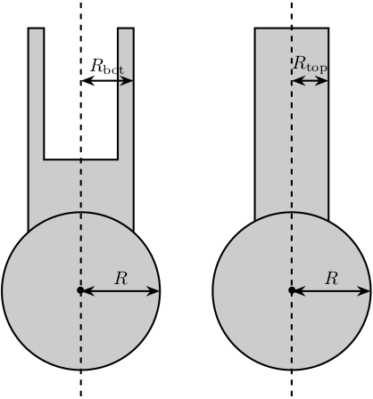
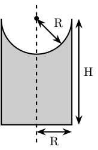

Stewart Platform - Simscape Model
Table of Contents
Stewart platforms are generated in multiple steps.
First, geometrical parameters are defined:
- \({}^Aa_i\) - Position of the joints fixed to the fixed base w.r.t \(\{A\}\)
- \({}^Ab_i\) - Position of the joints fixed to the mobile platform w.r.t \(\{A\}\)
- \({}^Bb_i\) - Position of the joints fixed to the mobile platform w.r.t \(\{B\}\)
- \(H\) - Total height of the mobile platform
These parameter are enough to determine all the kinematic properties of the platform like the Jacobian, stroke, stiffness, …
These geometrical parameters can be generated using different functions: initializeCubicConfiguration for cubic configuration or initializeGeneralConfiguration for more general configuration.
A function computeGeometricalProperties is then used to compute:
- \(J_f\) - Jacobian matrix for the force location
- \(J_d\) - Jacobian matrix for displacement estimation
- \(R_m\) - Rotation matrices to position the leg vectors
Then, geometrical parameters are computed for all the mechanical elements with the function initializeMechanicalElements:
- Shape of the platforms
- External Radius
- Internal Radius
- Density
- Thickness
- Shape of the Legs
- Radius
- Size of ball joint
- Density
Other Parameters are defined for the Simscape simulation:
- Sample mass, volume and position (
initializeSamplefunction) - Location of the inertial sensor
- Location of the point for the differential measurements
- Location of the Jacobian point for velocity/displacement computation
1 initializeGeneralConfiguration
1.1 Function description
The initializeGeneralConfiguration function takes one structure that contains configurations for the hexapod and returns one structure representing the Hexapod.
function [stewart] = initializeGeneralConfiguration(opts_param)
1.2 Optional Parameters
Default values for opts.
opts = struct(... 'H_tot', 90, ... % Height of the platform [mm] 'H_joint', 15, ... % Height of the joints [mm] 'H_plate', 10, ... % Thickness of the fixed and mobile platforms [mm] 'R_bot', 100, ... % Radius where the legs articulations are positionned [mm] 'R_top', 80, ... % Radius where the legs articulations are positionned [mm] 'a_bot', 10, ... % Angle Offset [deg] 'a_top', 40, ... % Angle Offset [deg] 'da_top', 0 ... % Angle Offset from 0 position [deg] );
Populate opts with input parameters
if exist('opts_param','var') for opt = fieldnames(opts_param)' opts.(opt{1}) = opts_param.(opt{1}); end end
1.3 Geometry Description

Figure 1: Schematic of the bottom plates with all the parameters
1.4 Compute Aa and Ab
We compute \([a_1, a_2, a_3, a_4, a_5, a_6]^T\) and \([b_1, b_2, b_3, b_4, b_5, b_6]^T\).
Aa = zeros(6, 3); % [mm] Ab = zeros(6, 3); % [mm] Bb = zeros(6, 3); % [mm]
for i = 1:3 Aa(2*i-1,:) = [opts.R_bot*cos( pi/180*(120*(i-1) - opts.a_bot) ), ... opts.R_bot*sin( pi/180*(120*(i-1) - opts.a_bot) ), ... opts.H_plate+opts.H_joint]; Aa(2*i,:) = [opts.R_bot*cos( pi/180*(120*(i-1) + opts.a_bot) ), ... opts.R_bot*sin( pi/180*(120*(i-1) + opts.a_bot) ), ... opts.H_plate+opts.H_joint]; Ab(2*i-1,:) = [opts.R_top*cos( pi/180*(120*(i-1) + opts.da_top - opts.a_top) ), ... opts.R_top*sin( pi/180*(120*(i-1) + opts.da_top - opts.a_top) ), ... opts.H_tot - opts.H_plate - opts.H_joint]; Ab(2*i,:) = [opts.R_top*cos( pi/180*(120*(i-1) + opts.da_top + opts.a_top) ), ... opts.R_top*sin( pi/180*(120*(i-1) + opts.da_top + opts.a_top) ), ... opts.H_tot - opts.H_plate - opts.H_joint]; end Bb = Ab - opts.H_tot*[0,0,1];
1.5 Returns Stewart Structure
stewart = struct(); stewart.Aa = Aa; stewart.Ab = Ab; stewart.Bb = Bb; stewart.H_tot = opts.H_tot; end
2 computeGeometricalProperties
2.1 Function description
function [stewart] = computeGeometricalProperties(stewart, opts_param)
2.2 Optional Parameters
Default values for opts.
opts = struct(... 'Jd_pos', [0, 0, 30], ... % Position of the Jacobian for displacement estimation from the top of the mobile platform [mm] 'Jf_pos', [0, 0, 30] ... % Position of the Jacobian for force location from the top of the mobile platform [mm] );
Populate opts with input parameters
if exist('opts_param','var') for opt = fieldnames(opts_param)' opts.(opt{1}) = opts_param.(opt{1}); end end
2.3 Rotation matrices
We initialize \(l_i\) and \(\hat{s}_i\)
leg_length = zeros(6, 1); % [mm] leg_vectors = zeros(6, 3);
We compute \(b_i - a_i\), and then:
\begin{align*} l_i &= \left|b_i - a_i\right| \\ \hat{s}_i &= \frac{b_i - a_i}{l_i} \end{align*}legs = stewart.Ab - stewart.Aa; for i = 1:6 leg_length(i) = norm(legs(i,:)); leg_vectors(i,:) = legs(i,:) / leg_length(i); end
We compute rotation matrices to have the orientation of the legs. The rotation matrix transforms the \(z\) axis to the axis of the leg. The other axis are not important here.
stewart.Rm = struct('R', eye(3)); for i = 1:6 sx = cross(leg_vectors(i,:), [1 0 0]); sx = sx/norm(sx); sy = -cross(sx, leg_vectors(i,:)); sy = sy/norm(sy); sz = leg_vectors(i,:); sz = sz/norm(sz); stewart.Rm(i).R = [sx', sy', sz']; end
2.4 Jacobian matrices
Compute Jacobian Matrix
Jd = zeros(6); for i = 1:6 Jd(i, 1:3) = leg_vectors(i, :); Jd(i, 4:6) = cross(0.001*(stewart.Bb(i, :) - opts.Jd_pos), leg_vectors(i, :)); end stewart.Jd = Jd; stewart.Jd_inv = inv(Jd);
Jf = zeros(6); for i = 1:6 Jf(i, 1:3) = leg_vectors(i, :); Jf(i, 4:6) = cross(0.001*(stewart.Bb(i, :) - opts.Jf_pos), leg_vectors(i, :)); end stewart.Jf = Jf; stewart.Jf_inv = inv(Jf);
end
3 initializeMechanicalElements
3.1 Function description
function [stewart] = initializeMechanicalElements(stewart, opts_param)
3.2 Optional Parameters
Default values for opts.
opts = struct(... 'thickness', 10, ... % Thickness of the base and platform [mm] 'density', 1000, ... % Density of the material used for the hexapod [kg/m3] 'k_ax', 1e8, ... % Stiffness of each actuator [N/m] 'c_ax', 1000, ... % Damping of each actuator [N/(m/s)] 'stroke', 50e-6 ... % Maximum stroke of each actuator [m] );
Populate opts with input parameters
if exist('opts_param','var') for opt = fieldnames(opts_param)' opts.(opt{1}) = opts_param.(opt{1}); end end
3.3 Bottom Plate
Figure 2: Schematic of the bottom plates with all the parameters
The bottom plate structure is initialized.
BP = struct();
We defined its internal radius (if there is a hole in the bottom plate) and its outer radius.
BP.Rint = 0; % Internal Radius [mm] BP.Rext = 150; % External Radius [mm]
We define its thickness.
BP.H = opts.thickness; % Thickness of the Bottom Plate [mm]
We defined the density of the material of the bottom plate.
BP.density = opts.density; % Density of the material [kg/m3]
And its color.
BP.color = [0.7 0.7 0.7]; % Color [RGB]
Then the profile of the bottom plate is computed and will be used by Simscape
BP.shape = [BP.Rint BP.H; BP.Rint 0; BP.Rext 0; BP.Rext BP.H]; % [mm]
The structure is added to the stewart structure
stewart.BP = BP;
3.4 Top Plate
The top plate structure is initialized.
TP = struct();
We defined the internal and external radius of the top plate.
TP.Rint = 0; % [mm] TP.Rext = 100; % [mm]
The thickness of the top plate.
TP.H = 10; % [mm]
The density of its material.
TP.density = opts.density; % Density of the material [kg/m3]
Its color.
TP.color = [0.7 0.7 0.7]; % Color [RGB]
Then the shape of the top plate is computed
TP.shape = [TP.Rint TP.H; TP.Rint 0; TP.Rext 0; TP.Rext TP.H];
The structure is added to the stewart structure
stewart.TP = TP;
3.5 Legs

Figure 3: Schematic for the legs of the Stewart platform
The leg structure is initialized.
Leg = struct();
The maximum Stroke of each leg is defined.
Leg.stroke = opts.stroke; % [m]
The stiffness and damping of each leg are defined
Leg.k_ax = opts.k_ax; % Stiffness of each leg [N/m] Leg.c_ax = opts.c_ax; % Damping of each leg [N/(m/s)]
The radius of the legs are defined
Leg.Rtop = 10; % Radius of the cylinder of the top part of the leg[mm] Leg.Rbot = 12; % Radius of the cylinder of the bottom part of the leg [mm]
The density of its material.
Leg.density = opts.density; % Density of the material used for the legs [kg/m3]
Its color.
Leg.color = [0.5 0.5 0.5]; % Color of the top part of the leg [RGB]
The radius of spheres representing the ball joints are defined.
Leg.R = 1.3*Leg.Rbot; % Size of the sphere at the extremity of the leg [mm]
We estimate the length of the legs.
legs = stewart.Ab - stewart.Aa; Leg.lenght = norm(legs(1,:))/1.5;
Then the shape of the bottom leg is estimated
Leg.shape.bot = ... [0 0; ... Leg.Rbot 0; ... Leg.Rbot Leg.lenght; ... Leg.Rtop Leg.lenght; ... Leg.Rtop 0.2*Leg.lenght; ... 0 0.2*Leg.lenght];
The structure is added to the stewart structure
stewart.Leg = Leg;
3.6 Ball Joints

Figure 4: Schematic of the support for the ball joints
SP is the structure representing the support for the ball joints at the extremity of each leg.
The SP structure is initialized.
SP = struct();
We can define its rotational stiffness and damping. For now, we use perfect joints.
SP.k = 0; % [N*m/deg] SP.c = 0; % [N*m/deg]
Its height is defined
SP.H = stewart.Aa(1, 3) - BP.H; % [mm]
Its radius is based on the radius on the sphere at the end of the legs.
SP.R = Leg.R; % [mm]
SP.section = [0 SP.H-SP.R; 0 0; SP.R 0; SP.R SP.H];
The density of its material is defined.
SP.density = opts.density; % [kg/m^3]
Its color is defined.
SP.color = [0.7 0.7 0.7]; % [RGB]
The structure is added to the Hexapod structure
stewart.SP = SP;
4 initializeSample
4.1 Function description
function [] = initializeSample(opts_param)
4.2 Optional Parameters
Default values for opts.
sample = struct( ... 'radius', 100, ... % radius of the cylinder [mm] 'height', 100, ... % height of the cylinder [mm] 'mass', 10, ... % mass of the cylinder [kg] 'measheight', 50, ... % measurement point z-offset [mm] 'offset', [0, 0, 0], ... % offset position of the sample [mm] 'color', [0.9 0.1 0.1] ... );
Populate opts with input parameters
if exist('opts_param','var') for opt = fieldnames(opts_param)' sample.(opt{1}) = opts_param.(opt{1}); end end
4.3 Save the Sample structure
save('./mat/sample.mat', 'sample');
end